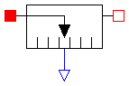
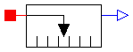
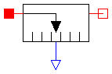

Measures the heatflux between two surfacess in an ideal way and provides the result as output signal (to be further processed with blocks of the Modelica.Blocks library).
Release Notes:
model HeatFlux
"Ideal sensor to measure the heat flux between two surfaces"
extends Interfaces.RelativeSensor;
SIunits.HeatFlux q
"heat flux from surface_a to surface_b (q = surface_a.q = -surface_b.q)"
;
equation
surface_a.T = surface_b.T;
surface_a.q = q;
surface_b.q = -q;
q = outPort.signal[1];
end HeatFlux;

Measures the absolute temperature (in Kelvin) of a surface in an ideal way and provides the result as output signals (to be further processed with blocks of the Modelica.Blocks library).
Release Notes:
model Temperature "Ideal sensor to measure the absolute temperature in Kelvin" extends Modelica.Icons.TranslationalSensor; SIunits.Temperature T "Kelvin temperature"; Interfaces.Surface_a surface_a; Modelica.Blocks.Interfaces.OutPort outPort(final n=1); equation T = surface_a.T; T = outPort.signal[1]; 0 = surface_a.q; end Temperature;
Measures the Celsius temperature of a surface in an ideal way and provides the result as output signals (to be further processed with blocks of the Modelica.Blocks library).
Release Notes:
model Temperature_C "Ideal sensor to measure the temperature in Celcius" extends Modelica.Icons.TranslationalSensor; SIunits.Temp_C T "Celsius temperature"; Interfaces.Surface_a surface_a; Modelica.Blocks.Interfaces.OutPort outPort(final n=1); equation T = surface_a.T + Modelica.Constants.T_zero; T = outPort.signal[1]; 0 = surface_a.q; end Temperature_C;

Measures the relative temperature T_rel between two surfaces in an ideal way and provides the result as output signal outPort.signal[1] (to be further processed with blocks of the Modelica.Blocks library).
Release Notes:
model RelativeTemperature
"Ideal sensor to measure the relative temperature between two surfaces"
extends Interfaces.RelativeSensor;
SIunits.Temperature T_rel
"Relative temperature between two surfaces (surface_b.T - surface_a.T)"
;
equation
T_rel = surface_b.T - surface_a.T;
T_rel = outPort.signal[1];
0 = surface_a.q;
0 = surface_b.q;
end RelativeTemperature;